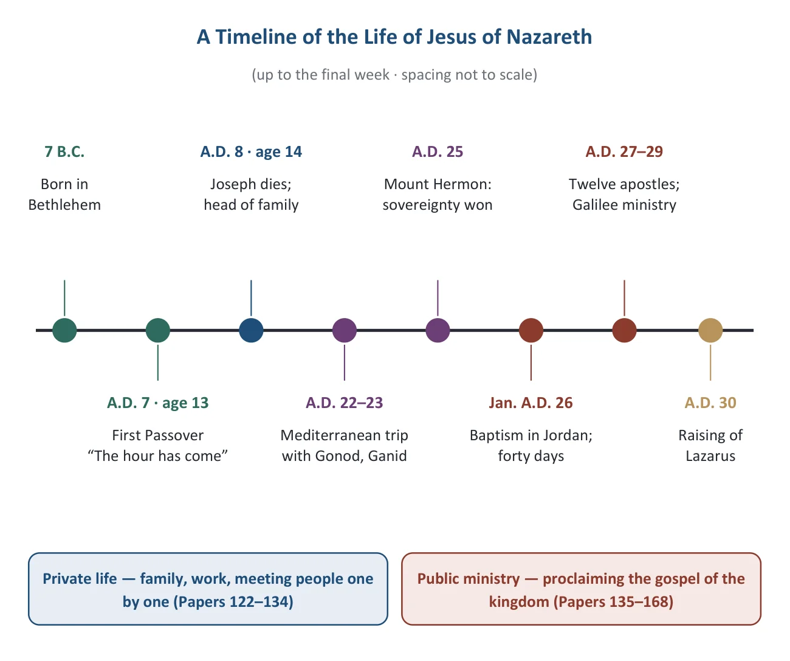
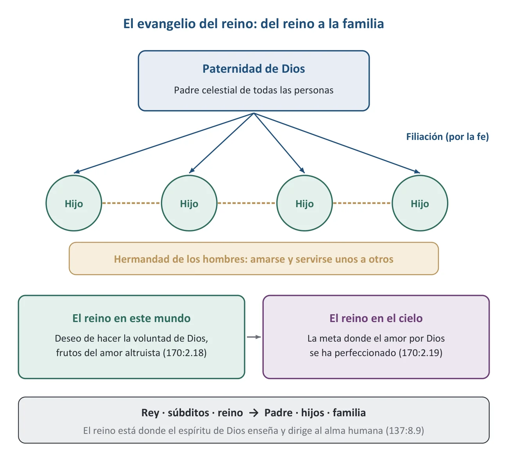

El Creador se hace Hijo del Hombre
Lectura: Documentos 119–120 · Documentos 121–127 · Documento 129 · Documento 132 · Documento 134 · Documentos 136–137 · Documentos 140–142 · Documento 155 · Documento 170

Micael, el Hijo Creador que hizo nuestro universo local, se convierte en su pleno soberano solo después de vivir siete veces a semejanza de los seres que ha creado. El séptimo y último de estos autootorgamientos es la vida de Jesús de Nazaret. Nació como un bebé indefenso, creció en una familia corriente, perdió a su padre a los catorce años y se convirtió en cabeza de familia, y recorrió el mundo mediterráneo encontrándose con las personas una por una. Comenzó su obra pública con el bautismo en el Jordán y predicó un evangelio sencillo: Dios es el Padre de todas las personas, y todas las personas son hermanos y hermanas. Esta semana sigue las líneas principales de su vida y de sus enseñanzas hasta la última semana.
Relato inicial
Imagine a un médico que ha construido un gran hospital. Nadie conoce mejor que él su distribución y su equipo médico. Un día se pone la bata de paciente y se acuesta en una cama de la sala más concurrida. Quiere sentir en su propio cuerpo los quejidos de la noche, la comida que se enfría, el largo tedio de la espera y el consuelo que puede traer una sola palabra del médico que pasa visita.
El que conoce el hospital y el que ha estado acostado en sus camas dirigirán el mismo hospital de manera diferente. El primero será justo. El segundo será justo y, además, profundamente comprensivo.
La cuarta parte de El libro de Urantia es la historia del Hacedor de un universo que se acuesta en esa misma cama. En las partes primera a tercera partimos del Paraíso y descendimos a través de la larga historia de Nebadon y de Urantia. Ahora todos esos caminos convergen en la vida de un solo hombre.
1. Siete autootorgamientos: los siete pasos que dio Micael
Por qué un Creador se hace criatura
Como vimos en la semana 5, nuestro universo local de Nebadon fue hecho por el Hijo Creador Micael. Pero hacer un universo no le da, por sí solo, la plena soberanía sobre él. Tiene que vivir como una de sus propias criaturas. Este acto, en el que un Hijo divino se humilla y entra en la vida de la criatura, se llama autootorgamiento. El documento 119 explica su propósito.
El propósito de estos autootorgamientos en forma de las criaturas consiste en permitir que dichos Creadores se tornen soberanos sabios, compasivos, justos y comprensivos. Estos Hijos divinos son innatamente justos, pero se vuelven comprensivamente misericordiosos como resultado de estas experiencias sucesivas de autootorgamiento; son por naturaleza misericordiosos, pero estas experiencias los tornan misericordiosos en formas nuevas y adicionales.119:0.4
Incluso un Hijo de Dios aprende por experiencia. La misericordia estaba allí desde el principio, pero una vez vivida, el Hijo se vuelve «comprensivamente misericordioso».
Llevó casi mil millones de años de tiempo de Urantia, completar la carrera de autootorgamientos de Micael y efectuar el establecimiento final de su autoridad suprema en el universo de su propia creación. Micael nació creador, fue instruido como administrador, capacitado como ejecutivo, pero se le exigió que ganara su soberanía por la experiencia.119:8.2
Siete pasos
En cada autootorgamiento se sometió a un aspecto diferente de la voluntad de las Deidades del Paraíso.
En su autootorgamiento Melquisedek manifestó la voluntad unida del Padre, el Hijo y el Espíritu; en su autootorgamiento Lanonandek, la voluntad del Padre y del Hijo; en el autootorgamiento adánico reveló la voluntad del Padre y del Espíritu; en el autootorgamiento seráfico, la voluntad del Hijo y del Espíritu; en el autootorgamiento mortal en Uversa, ilustró la voluntad del Actor Conjunto; en el autootorgamiento mortal morontial, la voluntad del Hijo Eterno; y en el autootorgamiento material en Urantia vivió la voluntad del Padre Universal aun como mortal de carne y hueso.119:8.4
La escalera desciende. Comienza en la forma de un Hijo elevado, pasa por el ángel y el mortal ascendente, y llega por fin a la carne mortal, el lugar más bajo entre las criaturas volitivas. Y solo en ese último peldaño vive directamente la voluntad del Padre Universal.

| Orden | Forma del autootorgamiento | Voluntad que siguió |
|---|---|---|
| 1 | Hijo Melquisedek | Voluntad combinada del Padre, el Hijo y el Espíritu |
| 2 | Hijo Lanonandek (Soberano del Sistema) | Voluntad del Padre y del Hijo |
| 3 | Hijo Material (adánico) | Voluntad del Padre y del Espíritu |
| 4 | Serafín | Voluntad del Hijo y del Espíritu |
| 5 | Mortal ascendente de Uversa | Voluntad del Espíritu Infinito (Actor Conjunto) |
| 6 | Mortal morontial | Voluntad del Hijo Eterno |
| 7 | Jesús, un hombre mortal en Urantia | Voluntad del Padre Universal |
Venir como un bebé
Los seres celestiales sabían que el séptimo autootorgamiento se haría en carne mortal, pero no cómo. En todos los autootorgamientos anteriores Micael había aparecido ya adulto.
Aunque creíamos que éste sería el método, nunca supimos, hasta el momento mismo del suceso, que Micael aparecería en la tierra como infante desamparado del reino. Hasta ese momento siempre había aparecido como un individuo plenamente desarrollado del grupo de personalidades seleccionado para el autootorgamiento y fue un anuncio emocionante el que se emitió desde Salvington informando de que el infante de Belén había nacido en Urantia.119:7.3
El soberano de un universo comenzó como un bebé que no podía valerse por sí mismo. Antes de que partiera, su hermano mayor Emanuel le dio este encargo.
«En el curso de tu autootorgamiento en Urantia una sola preocupación debe acompañarte: la comunión ininterrumpida entre ti y tu Padre Paradisiaco; la perfección de esa relación permitirá que el mundo de tu autootorgamiento y todo el universo de tu creación obtengan una nueva y más comprensible revelación de tu Padre y mi Padre, el Padre Universal de todos.120:1.4
Aquí está la clave de toda la vida de Jesús. Su tarea era mantener sin interrupción su comunión con el Padre, y esa comunión se convirtió por sí misma en la revelación del Padre. ¿Era entonces Jesús mitad Dios y mitad hombre? El documento 120 responde con claridad.
No fue Dios en asociación con el hombre; más bien fue Dios encarnado en el hombre. Y fue siempre precisamente ese ser combinado.120:4.2
Palabras nuevas
- Autootorgamiento: un Hijo divino que se humilla para entrar en un mundo y vivir allí a semejanza de sus criaturas.
- Encarnación: el nacimiento de un ser divino en un cuerpo humano. Cómo ocurre sigue siendo un misterio eterno (119:7.5).
- Emanuel: un ser elevado que representa a la Trinidad del Paraíso en Nebadon; cuidó del universo mientras Micael realizaba sus autootorgamientos.
Junto a la Biblia
Filipenses dice que Cristo «se anonadó a sí mismo, tomando forma de siervo, hecho semejante a los hombres» (Filipenses 2:7). Hebreos habla de un Pontífice «tentado en todo según nuestra semejanza», que por eso se puede «compadecer de nuestras flaquezas» (Hebreos 4:15). La idea de autootorgamiento de El libro de Urantia sitúa este despojarse de sí mismo y esta compasión dentro de un cuadro cósmico de siete pasos.
2. El niño y el carpintero de Nazaret: el hogar de José y María
El momento más adecuado
La época en que nació Jesús no se eligió al azar. Roma había unido el Mediterráneo en un solo mundo, el griego se entendía casi en todas partes, y los buenos caminos y los mares seguros llevaban las ideas con rapidez.
Cuando Micael se encarnó en Urantia, el mundo ofrecía las condiciones más favorables para el autootorgamiento del Hijo Creador, que se hubieran dado jamás o que se hayan dado desde entonces.121:1.1
Pero bajo la prosperidad exterior, las almas de las personas tenían hambre. Los mitos, el culto al emperador, la astrología y los cultos mistéricos que llegaban en oleadas desde Oriente prometían la salvación. El libro ve incluso esa hambre como parte de la preparación para Jesús.
La popularidad de estas religiones de misterio revela la búsqueda del hombre por sobrevivir, su verdadera sed y hambre de una religión personal y una rectitud individual. Aunque estos misterios no podían satisfacer adecuadamente este anhelo, prepararon el camino para la aparición subsiguiente de Jesús, quien en verdad trajo a este mundo el pan y el agua de la vida.121:5.12
Así pues, nació Jesús en Palestina, en el seno de una generación dominada por sistemas incompletos de filosofía y confundida por cultos religiosos complejos. A esta misma generación Jesús dio su evangelio de religión personal —la filiación con Dios.121:5.18
A una generación cansada de ritos complicados se le entregó la más sencilla de las verdades: Dios es Padre, y nosotros somos sus hijos.
Padres corrientes
Jesús nació en Belén el 21 de agosto del año 7 a. C. El libro lo llama Josué ben José, es decir, Josué hijo de José. Sus padres no eran personas extraordinarias.
Era el plan de Micael aparecer en la tierra como un hombre común, para que las gentes comunes pudieran comprenderlo y recibirlo; por esto Gabriel seleccionó a personas tales como José y María para ser los padres de autootorgamiento.122:1.3
José era un carpintero callado y reflexivo; María era alegre, franca y práctica. Su hijo tomó dones diferentes de cada uno.
Jesús había heredado de su padre su dulzura extraordinaria y su maravillosa comprensión de la naturaleza humana; y de su madre sus grandes dones didácticos y su extraordinaria capacidad de indignación recta frente a las injusticias. Emotivamente Jesús reaccionaba a veces al medio ambiente de su vida adulta como su padre, mostrándose meditabundo y adorador y a veces parecía triste; pero más a menudo actuaba de la manera optimista y decidida de su madre.122:5.3
Un pequeño episodio de cuando tenía unos cinco años anticipa la fe de toda su vida.
Jesús insistía en dirigirse a su Padre celestial como si se estuviera dirigiendo a José, su padre terrenal. Este alejamiento de las formas más solemnes y reverentes de comunicación con la Deidad preocupaba a sus padres, especialmente a su madre, pero no podían persuadirlo de que cambiase; recitaba sus oraciones tal como se le había enseñado, después de lo cual insistía en tener «una pequeña charla con mi Padre en el cielo».123:3.6
El llamado a los trece años
A los trece años Jesús subió a Jerusalén para su primera Pascua. Al contemplar las multitudes en el templo, su corazón se llenó de compasión, y esa noche un mensajero celestial vino a él por primera vez.
Fue éste uno de los días más extraordinarios que el Hijo de Dios viviera en la carne; y durante la noche, por primera vez en su carrera terrenal, apareció ante él un mensajero autorizado de Salvington, enviado por Emanuel, que dijo: «Ha llegado tu hora. Ya es tiempo que comiences los asuntos de tu Padre».124:6.15
Los dos años más difíciles
Justo después del llamado llegó la prueba. El libro señala que el tiempo más difícil de la vida de Jesús no fue la cruz, sino sus años catorce y quince.
Estos dos años, después de que comenzara Jesús a cobrar conciencia de su divinidad y destino, y antes de que lograra un alto grado de comunicación con su Ajustador residente fueron los más atribulados de su extraordinaria vida en Urantia.126:0.1
En septiembre del año 8 d. C., José sufrió heridas mortales al caerle una grúa mientras trabajaba en un edificio en Séforis. Todos los planes de estudiar en Jerusalén se vinieron abajo.
Este joven carpintero, que acababa de cumplir catorce años, despertó a una cruel realidad: no sólo tendría que cumplir con el mandato de su Padre celestial, o sea revelar la naturaleza divina en la tierra y en la carne, sino que en su joven naturaleza humana debería asumir también la responsabilidad de su madre viuda y de siete hermanos y hermanas y de la que aún no había nacido.126:2.2
Jesús supo aceptar con buena disposición las responsabilidades caídas tan súbitamente sobre sus hombros y cumplió fielmente con estas obligaciones hasta el fin. … Siempre fue verdad que Jesús «no se doblegó ante los pies de nadie». Estaba siempre dispuesto a aprender de quien fuese, aun del más humilde entre los niños, pero jamás derivó de fuentes humanas la autoridad para enseñar la verdad.126:2.3
Desde el nacimiento de Ruth, la menor, hasta que comenzó su ministerio público, fue un padre para sus hermanos y hermanas. La primera oración que escribió para la familia se convirtió después en el Padrenuestro (126:3.3-4). Mientras trabajaba como carpintero, sopesaba todas las instituciones del mundo con tres preguntas.
Según pasaban los años, este joven carpintero de Nazaret valoraba cada vez más las instituciones de la sociedad y las costumbres religiosas con un criterio invariable: ¿Qué es lo que hace por el alma humana? ¿Acerca Dios al hombre? ¿Acerca el hombre a Dios? Aunque el joven no había abandonado por completo el aspecto recreativo y social de la vida, cada vez más dedicaba su tiempo y energías a sólo dos fines: el cuidado de su familia y la preparación para hacer en la tierra la voluntad celestial de su Padre.126:2.5
Los lectores de hoy pueden tomar estas tres preguntas tal como están. Pueden hacérselas a los grupos a los que pertenecemos y a los hábitos y creencias a los que nos aferramos. El documento 127 describe así a Jesús hacia los veinte años.
Nacido en el mundo como un niño del reino, ha vivido su infancia y ha pasado por las distintas etapas de la adolescencia y juventud; está ahora en el umbral de la plena edad adulta, rico en la experiencia del vivir humano, repleto de comprensión de la naturaleza humana, y lleno de compasión por las flaquezas de la naturaleza humana. Se está volviendo experto en el arte divino de revelar su Padre del Paraíso a las criaturas mortales de todas las edades y etapas.127:6.15
No se saltó ninguna edad de la vida, y cada parte de esa experiencia se hizo suya.
Y esta total experiencia humana, es una posesión eterna del Soberano del Universo. Él es nuestro hermano comprensivo, nuestro amigo compasivo, nuestro soberano experto y nuestro padre misericordioso.127:6.13

Palabras nuevas
- Josué ben José: «Josué hijo de José», el nombre hebreo de Jesús.
- Hijo del Hombre: el título que Jesús eligió para sí mismo. Hacia los quince años lo leyó en el libro de Enoc y lo tomó a pecho (126:3.8).
- Ajustador del Pensamiento: el fragmento del espíritu del Padre que conocimos en la semana 10. Un Ajustador residía también en la mente humana de Jesús y crecía junto con él.
3. Recorriendo el mundo mediterráneo: el viaje a Roma
Un viajero a quien nadie conocía
Cuando sus hermanos y hermanas ya habían encontrado su propio camino, Jesús dejó el hogar. Desde abril del año 22 d. C. hasta diciembre del año siguiente, sirvió como intérprete y tutor de Gonod, un comerciante de la India, y de su hijo Ganid, y recorrió el mundo mediterráneo pasando por Alejandría, Atenas y Roma (130:0.1). Nadie sabía quién era. Para los observadores celestiales, este período fue especial.
Para las inteligencias celestiales del universo local que lo presenciaban, este viaje por el Mediterráneo fue el más cautivante de todas las experiencias terrenas de Jesús, por lo menos de toda su carrera hasta a su crucifixión y muerte.129:4.1
Una persona a la vez
En Roma no predicó. En lugar de eso, se sentó con las personas cara a cara.
La tesis de su mensaje era siempre: la realidad del amor del Padre celestial y la verdad de su misericordia, estos hechos sumados a la buena nueva de que el hombre es un hijo de fe de este mismo Dios de amor. La técnica que Jesús acostumbraba utilizar en sus relaciones sociales consistía en extraer las opiniones y sentimientos de los seres con quienes conversaba haciéndoles preguntas. … Como regla, a los que enseñaba más, menos decía. Los que más beneficios derivaron de su ministerio personal fueron mortales agobiados, ansiosos y deprimidos132:4.2
Un solo encuentro podía cambiar la vida de una persona.
Jesús pasó una noche conversando con un rico amo de esclavos, le habló del hombre como hijo de Dios, y al día siguiente este hombre, Claudio, otorgó la libertad a ciento diecisiete esclavos.132:4.5
A un soldado que encontró junto al Tiber le dijo esto.
Caminando con un soldado romano junto al Tiber le dijo: «Sé valiente de corazón así como de brazo. Atrévete a hacer justicia y ten la entereza de ser misericordioso. Obliga a tu naturaleza inferior a que obedezca a tu naturaleza superior del mismo modo que tú obedeces a tus superiores. Reverencia la bondad y exalta la verdad. Elige la belleza en lugar de la fealdad. Ama a tus semejantes y acércate a Dios con todo tu corazón, porque Dios es tu Padre en el cielo».132:4.6
Así Jesús, durante su estadía en Roma, entró personalmente en contacto afectivo y edificante con unos quinientos mortales del reino. De este modo obtuvo un conocimiento de las diferentes razas de la humanidad que jamás hubiera podido adquirir ni en Jerusalén, ni tampoco en Alejandría.132:4.3
Antes del ministerio público ya había un ministerio sin nombre.
No un modelo, sino un camino
Vino a la tierra para que se le manifestase la plenitud de Dios al hombre; ya se ha convertido casi en la perfección del hombre que aguarda la ocasión de manifestarse a Dios. Y todo esto lo hizo antes de cumplir los treinta años de edad.129:4.8
Eso no significa que debamos copiar su vida detalle por detalle.
Jesús no vivió su vida en la tierra como un ejemplo para que la copiaran todos los demás seres humanos. … No podéis aspirar a vivir su vida, pero podéis resolver que viviréis vuestra vida, así como, y por los mismos medios que él vivió la suya. … Jesús es la senda nueva y viviente que va del hombre a Dios, desde lo parcial hasta lo perfecto, de lo terrenal a lo celestial, del tiempo a la eternidad.129:4.7
No podemos convertirnos en carpinteros galileos del siglo primero, ni nos hace falta. Pero podemos vivir hoy, donde estamos, de la misma manera en que él confiaba en el Padre y amaba a las personas.
Victoria en el monte Hermón
A fines del verano del año 25 d. C., Jesús subió solo al monte Hermón y pasó seis semanas en comunión con el Padre. En la última semana, Satanás y Caligastia se le aparecieron y le ofrecieron componendas.
Ante todas las componendas y expedientes temporales sugeridas por Lucifer, ante todas esas engañosas propuestas relativas al autootorgamiento en forma de encarnación, Jesús solamente tenía una respuesta: «Que se haga la voluntad de mi Padre que está en el Paraíso».134:8.8
Una tarde a finales del verano, entre los árboles y el silencio de la naturaleza, Micael de Nebadon ganó la indisputada soberanía de su universo. Ese día completó la tarea que han de cumplir los Hijos Creadores, la de vivir plenamente la vida encarnada en la semejanza de la carne mortal, en los mundos evolutivos del tiempo y del espacio.134:8.9
La tentación en el desierto, que los evangelios sitúan después del bautismo, se cuenta en este libro como el acontecimiento del monte Hermón antes del bautismo. La rebelión de Lucifer que vimos en la semana 7 quedó, en la práctica, resuelta ese día.
Aclarar un malentendido
Un malentendido común: Jesús lo sabía todo desde el principio, así que su vida humana fue solo una apariencia. Lo que dice El libro de Urantia: Jesús fue siempre Dios y hombre a la vez (120:4.3), pero fue dándose cuenta de ello poco a poco en su mente humana (120:4.2). Durante la encarnación renunció por decisión propia a la ayuda de fuera del planeta (120:1.3), y supo de la visita de Gabriel a su madre solo el día de su bautismo (126:2.4). Aprendió, luchó y creció de verdad.
4. El bautismo en el Jordán y el ministerio público
Ha llegado mi hora
Aun cuando llegó la noticia de que Juan predicaba un bautismo de arrepentimiento en el Jordán, Jesús no se apresuró.
Pero Jesús siguió trabajando, haciendo barcas, hasta que Juan llegó río arriba a un punto cercano a Pella, en el mes de enero del siguiente año, 26 d. de J. C. Entonces dejó sus herramientas, declarando, «Ha llegado mi hora», y seguidamente se presentó ante Juan para ser bautizado.134:9.8
No fue a confesar sus pecados.
Es por lo tanto evidente que Jesús no recibió de ninguna manera el bautismo de Juan como rito de arrepentimiento ni para la remisión de los pecados.136:2.1
Su bautismo fue su consagración al cumplimiento de la voluntad del Padre celestial. Durante su bautismo oyó el inequívoco llamado de su Padre, el mandato final de que se ocupara de los asuntos de su Padre136:2.6
Algo nuevo y aún más grande
Como vimos en la semana 10, el mortal que llega a su plenitud se fusiona con el Ajustador del Pensamiento. Los observadores celestiales esperaban exactamente eso en el Jordán. En cambio, ocurrió otra cosa.
muchos observadores superhumanos esperaban presenciar la fusión del Ajustador con la mente que habitaba, pero estaban destinados todos ellos a sufrir una desilusión. Ocurrió algo nuevo y aun más grande. Mientras Juan ponía sus manos sobre Jesús para bautizarlo, el Ajustador residente se despidió para siempre del alma humana perfeccionada de Josué ben José. Pocos momentos después, esta entidad divina regresó de Diviningtón como un Ajustador Personalizado y jefe de su clase en todo el universo local de Nebadon. Así pues pudo Jesús ver a su propio ex espíritu divino descendiendo sobre él de regreso en forma personalizada. Y oyó ahora a este mismo espíritu de origen del Paraíso hablar y decir: «Éste es mi Hijo amado en quien tengo complacencia».136:2.3
El documento 136 resume brevemente ese día.
Este día de bautismo llevó a su término la vida puramente humana de Jesús. El Hijo divino ha encontrado a su Padre, el Padre Universal ha encontrado a su Hijo encarnado, y se hablan el uno al otro.136:2.7
Junto a la Biblia
Mateo cuenta que, cuando Jesús salió del agua después de su bautismo, los cielos se abrieron y una voz dijo: «Este es mi Hijo amado, en el cual tengo contentamiento» (Mateo 3:16-17). El libro de Urantia explica que la voz era la del Ajustador que había residido en Jesús, ahora personalizado (136:2.5). La tentación en el desierto (Mateo 4:1-11) se cuenta como el acontecimiento del monte Hermón antes del bautismo (134:8.9).
Los pasos del ministerio público
Después de su bautismo, Jesús pasó cuarenta días a solas, meditando sobre el camino que tenía por delante. Ese año llamó a sus primeros discípulos, y el 12 de enero del año 27 d. C. ordenó a los doce apóstoles (140:0.1). Luego vinieron las giras de predicación por Galilea; el gran campamento junto al mar en Betsaida en el año 28 d. C. (148:0.1); en el año 29 d. C., la alimentación de los cinco mil y la crisis de Capernaum, cuando rechazó a la multitud que quería hacerlo rey; la experiencia en el monte de la transfiguración; y en el año 30 d. C., la misión en Perea y la resurrección de Lázaro en Betania. Lo de Lázaro llevó a los dirigentes de Jerusalén a decidir la muerte de Jesús, y la historia pasa a la última semana, que veremos en la semana 12.

No los mismos pensamientos, sino el mismo espíritu
Los doce apóstoles eran un grupo variado de pescadores, un recaudador de impuestos y zelotes. Una noche en Amatus, cuando Santiago preguntó cómo podrían aprender todos a ver las cosas de la misma manera, Jesús le preguntó a su vez cuándo les había enseñado tal cosa, y luego respondió.
No hace falta que veáis las cosas de la misma manera ni que las sintáis de la misma manera ni tampoco que penséis de la misma manera para ser iguales espiritualmente. La unidad espiritual deriva de la conciencia de que cada uno de vosotros está habitado, y cada vez más dominado, por el don espiritual del Padre celestial. Vuestra armonía apostólica ha de crecer del hecho de que la esperanza espiritual de cada uno de vosotros es idéntica en origen, naturaleza y destino.141:5.1
Lo que él quería no era uniformidad, sino unidad espiritual. Las personas que piensan de manera distinta pueden ser una sola si albergan el mismo espíritu del Padre y buscan hacer la misma voluntad.
5. El evangelio del reino del cielo: paternidad y hermandad
El reino está entre vosotros
Los judíos esperaban un reino mesiánico que restauraría el trono de David. En junio del año 26 d. C., al predicar su primer sermón público completo en la sinagoga de Capernaum, Jesús proclamó un reino totalmente distinto.
el reino de mi Padre nada tiene que ver con cosas visibles y materiales. Y este reino ya está entre vosotros, porque donde el espíritu de Dios enseña y dirige al alma del hombre, allí en realidad está el reino del cielo.137:8.9
El precio de entrada era también sencillo.
Si únicamente creéis en que mi Padre os ama con un amor infinito, ya estáis en el reino de Dios».137:8.17
Y el camino a la grandeza en este reino va en sentido contrario al camino del mundo.
«En el reino de mi Padre no habrá ni judío ni gentil, sólo los que buscan la perfección mediante el servicio, porque declaro que el que quisiese ser grande en el reino de mi Padre debe primero hacerse siervo de todos.137:8.11
Ese día los oyentes de la sinagoga se dividieron en tres: un tercio creyó, un tercio lo rechazó y el resto pensó que había perdido el juicio (137:8.18).
Una familia más que un reino
Jesús sabía que «reino» no era el mejor recipiente para su mensaje. Quería expresarlo de nuevo con el lenguaje de la familia.
Dijo Jesús: «Los pueblos de otra era comprenderán mejor el evangelio del reino cuando se lo presente en términos que expresen la relación familiar —cuando el hombre comprenda la religión como la enseñanza de la paternidad de Dios y de la hermandad de los hombres, la filiación con Dios».142:7.4
Jesús deseaba sustituir la idea de reino, rey y súbditos por el concepto de familia celestial, Padre celestial, e hijos liberados de Dios ocupados en el servicio gozoso y voluntario de sus semejantes y en la adoración sublime e inteligente de Dios el Padre.170:2.12
El Maestro aclaró que el reino del cielo debe comenzar con el concepto dual de la verdad de la paternidad de Dios y el hecho correlacionado de la hermandad de los hombres, y debe centrarse en esto.170:2.1
Entre un rey y sus súbditos hay mando y obediencia; entre un padre y sus hijos hay amor y confianza. Los hijos del mismo Padre son hermanos y hermanas entre sí. La hermandad de los hombres se desprende naturalmente de la paternidad de Dios.

Jesús enseñó también que el reino tiene dos fases.
«Primero. El reino de Dios en este mundo, el supremo deseo de hacer la voluntad de Dios, el amor altruista del hombre que rinde los buenos frutos de una mejor conducta ética y moral.170:2.18
«Segundo. El reino de Dios en el cielo, la meta de los creyentes mortales, el estado en el que el amor por Dios se ha perfeccionado, y se cumple la voluntad de Dios más divinamente».170:2.19
El reino es a la vez una experiencia en la que entramos ahora por la fe y una meta que todavía ha de cumplirse. La ascensión desde los mundos de estancia hasta el Paraíso que vimos en la semana 6 es el camino hacia su segunda fase.
La religión de autoridad y la religión del espíritu
A medida que crecía la oposición en Galilea, Jesús ayudó a sus apóstoles a distinguir dos clases de religión.
Las religiones de autoridad requieren de los hombres una uniformidad en la creencia, pero esto es imposible de lograr en el presente estado del mundo. La religión del espíritu requiere tan sólo unidad de experiencia —uniformidad de destino— permitiendo la plena diversidad de la creencia. … Las religiones de autoridad se cristalizan en credos sin vida; la religión del espíritu crece en el regocijo y libertad en aumento en las acciones ennoblecedoras de servicio amante y ministración misericordiosa.155:6.9
| Punto de comparación | Religión de autoridad | Religión del espíritu |
|---|---|---|
| Fundamento | Autoridad de la tradición y de los escritos | Experiencia personal de conocer a Dios |
| Exige | Uniformidad de creencias y opiniones | Unidad de experiencia y de destino |
| Entre las personas | Divide y las enfrenta | Las acerca en la comprensión |
| Dirección en el tiempo | Ata al pasado | Lleva hacia adelante por la revelación progresiva |
| Resultado | Se endurece en credos sin vida | Crece en la alegría y la libertad del servicio |
Lo que ocultó la enseñanza
El libro de Urantia habla también con franqueza de cómo se transmitió después el evangelio de Jesús. En el afán de exaltar su persona, quedó oscurecido el mensaje que él trajo.
No queremos restarle importancia a la personalidad de Jesús en una religión que pueda llevar su nombre, pero tampoco queremos permitir que dicha consideración eclipse su vida inspirada o suplante su mensaje salvador: la paternidad de Dios y la fraternidad de los hombres.149:2.4
Ese mensaje se muestra mejor en su vida que en sus sermones.
Vosotros, así como lo hicieron sus apóstoles, podréis comprender mejor las enseñanzas de Jesús por su vida. Vivió una vida perfeccionada en Urantia, y sus enseñanzas singulares sólo pueden ser comprendidas cuando se visualiza esa vida dentro de su ambiente inmediato. Es su vida, y no sus lecciones a los doce ni los sermones a las multitudes, la que os ayudará a revelar el carácter divino y la personalidad amante del Padre.140:8.19
El último documento del libro, sobre la fe de Jesús, resume lo que nos pide. He aquí una línea, como anticipo de lo que veremos con detenimiento en la semana 12.
Jesús no requiere que sus discípulos crean en él sino más bien que crean con él, que crean en la realidad del amor de Dios y acepten con plena confianza la certeza de la seguridad de la filiación con el Padre celestial.196:0.13
Al final, lo que el Creador mostró al hacerse hijo del hombre se reduce a una sola cosa: Dios es nuestro Padre, y podemos creer en él como creyó Jesús.
Aclarar un malentendido
Un malentendido común: El reino del cielo es un Estado político y terrenal que un día bajará del cielo y se establecerá. Lo que dice El libro de Urantia: Jesús dijo que el reino está dondequiera que el espíritu de Dios enseña y dirige al alma humana (137:8.9). Entramos en él ahora por la fe, y se cumple en el cielo (170:2.18-20). No relacionó el reino con una segunda venida a la tierra (170:2.10), y expresó su núcleo con el lenguaje familiar de la paternidad de Dios y la hermandad de los hombres (142:7.4).
Palabras nuevas
- Ajustador Personalizado: un Ajustador del Pensamiento que ha terminado su misión y ha recibido una personalidad independiente. El Ajustador de Jesús fue personalizado en su bautismo y se convirtió en jefe de los Ajustadores de Nebadon.
- Reino del cielo: una relación familiar con Dios que comienza en el alma humana que busca hacer su voluntad y se cumple en el cielo.
- Hermandad de los hombres: la enseñanza de que todas las personas son hijos del mismo Padre y, por tanto, hermanos y hermanas entre sí.
- Religión del espíritu: una religión basada no en la autoridad ni en el credo, sino en la experiencia personal de conocer a Dios.
Puntos clave de la semana
- El Hijo Creador Micael se convirtió en pleno soberano de Nebadon después de siete autootorgamientos a semejanza de sus propias criaturas. Los autootorgamientos lo hicieron «comprensivamente misericordioso».
- En el séptimo autootorgamiento vino como un bebé indefenso y se entregó por completo a la voluntad del Padre Universal. Fue Dios encarnado en el hombre.
- Jesús creció con padres corrientes, perdió a su padre a los catorce años y se disciplinó espiritualmente como cabeza de familia al cuidar de los suyos.
- En el viaje por el Mediterráneo se encontró con cientos de personas una por una sin darse a conocer. No es un modelo que copiar, sino el camino vivo del hombre a Dios.
- Ganó su soberanía en el monte Hermón, y en el bautismo en el Jordán su Ajustador regresó personalizado, lo que puso fin a su vida puramente humana.
- El evangelio del reino es la paternidad de Dios y la hermandad de los hombres. El reino ya está presente dondequiera que el espíritu de Dios guía al alma humana.
- La religión de autoridad exige uniformidad de creencias; la religión del espíritu solo pide unidad de experiencia y deja lugar a la diversidad.
Preguntas para reflexionar
- ¿Cómo cambia su manera de ver al Dios a quien ora la idea de que incluso un Hijo de Dios se volvió «comprensivamente misericordioso» por la experiencia (119:0.4)?
- Si midiera un hábito de su vida religiosa con las tres preguntas del joven carpintero (126:2.5), ¿qué respuestas saldrían?
- ¿Qué le pide, en su trato con los demás, la preferencia de Jesús por el lenguaje de la «familia» sobre el del «reino» (142:7.4, 170:2.12)?
Lectura para la próxima semana
- Documentos 171–196 — la entrada en Jerusalén y la última semana, la cruz, la resurrección y las apariciones morontiales, Pentecostés y la fe de Jesús